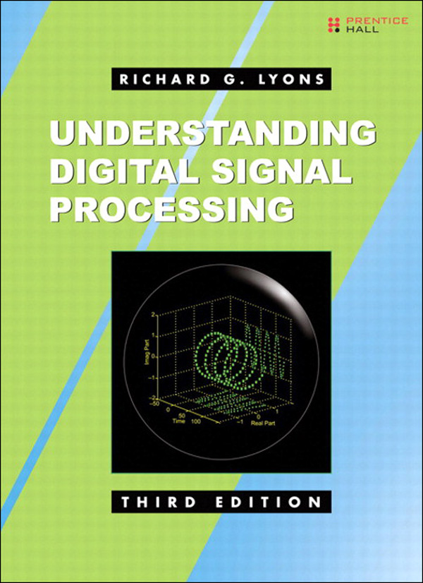
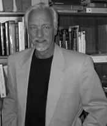

Third Edition
Upper Saddle River, NJ • Boston • Indianapolis • San Francisco
New York • Toronto • Montreal • London • Munich • Paris • Madrid
Capetown • Sydney • Tokyo • Singapore • Mexico City
Many of the designations used by manufacturers and sellers to distinguish their products are claimed as trademarks. Where those designations appear in this book, and the publisher was aware of a trademark claim, the designations have been printed with initial capital letters or in all capitals.
The author and publisher have taken care in the preparation of this book, but make no expressed or implied warranty of any kind and assume no responsibility for errors or omissions. No liability is assumed for incidental or consequential damages in connection with or arising out of the use of the information or programs contained herein.
The publisher offers excellent discounts on this book when ordered in quantity for bulk purchases or special sales, which may include electronic versions and/or custom covers and content particular to your business, training goals, marketing focus, and branding interests. For more information, please contact:
U.S. Corporate and Government Sales
(800) 382-3419
corpsales@pearsontechgroup.com
For sales outside the United States please contact:
International Sales
international@pearson.com
Visit us on the Web: informit.com/ph
Library of Congress Cataloging-in-Publication Data
Lyons, Richard G., 1948-
Understanding digital signal processing / Richard G. Lyons.—3rd ed.
p. cm.
Includes bibliographical references and index.
ISBN 0-13-702741-9 (hardcover : alk. paper)
1. Signal processing—Digital techniques. I. Title.
TK5102.9.L96 2011
621.382’2—dc22 2010035407
Copyright © 2011 Pearson Education, Inc.
All rights reserved. Printed in the United States of America. This publication is protected by copyright, and permission must be obtained from the publisher prior to any prohibited reproduction, storage in a retrieval system, or transmission in any form or by any means, electronic, mechanical, photocopying, recording, or likewise. For information regarding permissions, write to:
Pearson Education, Inc.
Rights and Contracts Department
501 Boylston Street, Suite 900
Boston, MA 02116
Fax: (617) 671-3447
ISBN-13: 978-0-13-702741-5
ISBN-10: 0-13-702741-9
Text printed in the United States on recycled paper at Edwards Brothers in Ann Arbor, Michigan.
Second printing, April 2011
I dedicate this book to my daughters, Julie and Meredith—I wish I could go with you; to my mother, Ruth, for making me finish my homework; to my father, Grady, who didn’t know what he started when he built that workbench in the basement; to my brother Ray for improving us all; to my brother Ken who succeeded where I failed; to my sister Nancy for running interference for us; and to the skilled folks on the USENET newsgroup comp.dsp. They ask the good questions and provide the best answers. Finally, to Sigi Pardula (Batgirl): Without your keeping the place running, this book wouldn’t exist.
1 DISCRETE SEQUENCES AND SYSTEMS
3 THE DISCRETE FOURIER TRANSFORM
5 FINITE IMPULSE RESPONSE FILTERS
6 INFINITE IMPULSE RESPONSE FILTERS
7 SPECIALIZED DIGITAL NETWORKS AND FILTERS
9 THE DISCRETE HILBERT TRANSFORM
12 DIGITAL DATA FORMATS AND THEIR EFFECTS
13 DIGITAL SIGNAL PROCESSING TRICKS
A THE ARITHMETIC OF COMPLEX NUMBERS
B CLOSED FORM OF A GEOMETRIC SERIES
D MEAN, VARIANCE, AND STANDARD DEVIATION
G FREQUENCY SAMPLING FILTER DERIVATIONS
This book is an expansion of previous editions of Understanding Digital Signal Processing. Like those earlier editions, its goals are (1) to help beginning students understand the theory of digital signal processing (DSP) and (2) to provide practical DSP information, not found in other books, to help working engineers/scientists design and test their signal processing systems. Each chapter of this book contains new information beyond that provided in earlier editions.
It’s traditional at this point in the preface of a DSP textbook for the author to tell readers why they should learn DSP. I don’t need to tell you how important DSP is in our modern engineering world. You already know that. I’ll just say that the future of electronics is DSP, and with this book you will not be left behind.
This third edition is appropriate as the text for a one- or two-semester undergraduate course in DSP. It follows the DSP material I cover in my corporate training activities and a signal processing course I taught at the University of California Santa Cruz Extension. To aid students in their efforts to learn DSP, this third edition provides additional explanations and examples to increase its tutorial value. To test a student’s understanding of the material, homework problems have been included at the end of each chapter. (For qualified instructors, a Solutions Manual is available from Prentice Hall.)
To help working DSP engineers, the changes in this third edition include, but are not limited to, the following:
• Practical guidance in building discrete differentiators, integrators, and matched filters
• Descriptions of statistical measures of signals, variance reduction by way of averaging, and techniques for computing real-world signal-to-noise ratios (SNRs)
• A significantly expanded chapter on sample rate conversion (multirate systems) and its associated filtering
• Implementing fast convolution (FIR filtering in the frequency domain)
• IIR filter scaling
• Enhanced material covering techniques for analyzing the behavior and performance of digital filters
• Expanded descriptions of industry-standard binary number formats used in modern processing systems
• Numerous additions to the popular “Digital Signal Processing Tricks” chapter
Learning the fundamentals, and how to speak the language, of digital signal processing does not require profound analytical skills or an extensive background in mathematics. All you need is a little experience with elementary algebra, knowledge of what a sinewave is, this book, and enthusiasm. This may sound hard to believe, particularly if you’ve just flipped through the pages of this book and seen figures and equations that look rather complicated. The content here, you say, looks suspiciously like material in technical journals and textbooks whose meaning has eluded you in the past. Well, this is not just another book on digital signal processing.
In this book I provide a gentle, but thorough, explanation of the theory and practice of DSP. The text is not written so that you may understand the material, but so that you must understand the material. I’ve attempted to avoid the traditional instructor–student relationship and have tried to make reading this book seem like talking to a friend while walking in the park. I’ve used just enough mathematics to help you develop a fundamental understanding of DSP theory and have illustrated that theory with practical examples.
I have designed the homework problems to be more than mere exercises that assign values to variables for the student to plug into some equation in order to compute a result. Instead, the homework problems are designed to be as educational as possible in the sense of expanding on and enabling further investigation of specific aspects of DSP topics covered in the text. Stated differently, the homework problems are not designed to induce “death by algebra,” but rather to improve your understanding of DSP. Solving the problems helps you become proactive in your own DSP education instead of merely being an inactive recipient of DSP information.
Learning digital signal processing is not something you accomplish; it’s a journey you take. When you gain an understanding of one topic, questions arise that cause you to investigate some other facet of digital signal processing.† Armed with more knowledge, you’re likely to begin exploring further aspects of digital signal processing much like those shown in the diagram on page xviii. This book is your tour guide during the first steps of your journey.
†“You see I went on with this research just the way it led me. This is the only way I ever heard of research going. I asked a question, devised some method of getting an answer, and got—a fresh question. Was this possible, or that possible? You cannot imagine what this means to an investigator, what an intellectual passion grows upon him. You cannot imagine the strange colourless delight of these intellectual desires” (Dr. Moreau—infamous physician and vivisectionist from H.G. Wells’ Island of Dr. Moreau, 1896).
You don’t need a computer to learn the material in this book, but it would certainly help. DSP simulation software allows the beginner to verify signal processing theory through the time-tested trial and error process.‡ In particular, software routines that plot signal data, perform the fast Fourier transforms, and analyze digital filters would be very useful.
‡“One must learn by doing the thing; for though you think you know it, you have no certainty until you try it” (Sophocles, 496–406 B.C.).
As you go through the material in this book, don’t be discouraged if your understanding comes slowly. As the Greek mathematician Menaechmus curtly remarked to Alexander the Great, when asked for a quick explanation of mathematics, “There is no royal road to mathematics.” Menaechmus was confident in telling Alexander the only way to learn mathematics is through careful study. The same applies to digital signal processing. Also, don’t worry if you need to read some of the material twice. While the concepts in this book are not as complicated as quantum physics, as mysterious as the lyrics of the song “Louie Louie,” or as puzzling as the assembly instructions of a metal shed, they can become a little involved. They deserve your thoughtful attention. So, go slowly and read the material twice if necessary; you’ll be glad you did. If you show persistence, to quote Susan B. Anthony, “Failure is impossible.”
Chapter 1 begins by establishing the notation used throughout the remainder of the book. In that chapter we introduce the concept of discrete signal sequences, show how they relate to continuous signals, and illustrate how those sequences can be depicted in both the time and frequency domains. In addition, Chapter 1 defines the operational symbols we’ll use to build our signal processing system block diagrams. We conclude that chapter with a brief introduction to the idea of linear systems and see why linearity enables us to use a number of powerful mathematical tools in our analysis.
Chapter 2 introduces the most frequently misunderstood process in digital signal processing, periodic sampling. Although the concept of sampling a continuous signal is not complicated, there are mathematical subtleties in the process that require thoughtful attention. Beginning gradually with simple examples of lowpass sampling, we then proceed to the interesting subject of bandpass sampling. Chapter 2 explains and quantifies the frequency-domain ambiguity (aliasing) associated with these important topics.
Chapter 3 is devoted to one of the foremost topics in digital signal processing, the discrete Fourier transform (DFT) used for spectrum analysis. Coverage begins with detailed examples illustrating the important properties of the DFT and how to interpret DFT spectral results, progresses to the topic of windows used to reduce DFT leakage, and discusses the processing gain afforded by the DFT. The chapter concludes with a detailed discussion of the various forms of the transform of rectangular functions that the reader is likely to encounter in the literature.
Chapter 4 covers the innovation that made the most profound impact on the field of digital signal processing, the fast Fourier transform (FFT). There we show the relationship of the popular radix 2 FFT to the DFT, quantify the powerful processing advantages gained by using the FFT, demonstrate why the FFT functions as it does, and present various FFT implementation structures. Chapter 4 also includes a list of recommendations to help the reader use the FFT in practice.
Chapter 5 ushers in the subject of digital filtering. Beginning with a simple lowpass finite impulse response (FIR) filter example, we carefully progress through the analysis of that filter’s frequency-domain magnitude and phase response. Next, we learn how window functions affect, and can be used to design, FIR filters. The methods for converting lowpass FIR filter designs to bandpass and highpass digital filters are presented, and the popular Parks-McClellan (Remez) Exchange FIR filter design technique is introduced and illustrated by example. In that chapter we acquaint the reader with, and take the mystery out of, the process called convolution. Proceeding through several simple convolution examples, we conclude Chapter 5 with a discussion of the powerful convolution theorem and show why it’s so useful as a qualitative tool in understanding digital signal processing.
Chapter 6 is devoted to a second class of digital filters, infinite impulse response (IIR) filters. In discussing several methods for the design of IIR filters, the reader is introduced to the powerful digital signal processing analysis tool called the z-transform. Because the z-transform is so closely related to the continuous Laplace transform, Chapter 6 starts by gently guiding the reader from the origin, through the properties, and on to the utility of the Laplace transform in preparation for learning the z-transform. We’ll see how IIR filters are designed and implemented, and why their performance is so different from that of FIR filters. To indicate under what conditions these filters should be used, the chapter concludes with a qualitative comparison of the key properties of FIR and IIR filters.
Chapter 7 introduces specialized networks known as digital differentiators, integrators, and matched filters. In addition, this chapter covers two specialized digital filter types that have not received their deserved exposure in traditional DSP textbooks. Called interpolated FIR and frequency sampling filters, providing improved lowpass filtering computational efficiency, they belong in our arsenal of filter design techniques. Although these are FIR filters, their introduction is delayed to this chapter because familiarity with the z-transform (in Chapter 6) makes the properties of these filters easier to understand.
Chapter 8 presents a detailed description of quadrature signals (also called complex signals). Because quadrature signal theory has become so important in recent years, in both signal analysis and digital communications implementations, it deserves its own chapter. Using three-dimensional illustrations, this chapter gives solid physical meaning to the mathematical notation, processing advantages, and use of quadrature signals. Special emphasis is given to quadrature sampling (also called complex down-conversion).
Chapter 9 provides a mathematically gentle, but technically thorough, description of the Hilbert transform—a process used to generate a quadrature (complex) signal from a real signal. In this chapter we describe the properties, behavior, and design of practical Hilbert transformers.
Chapter 10 presents an introduction to the fascinating and useful process of sample rate conversion (changing the effective sample rate of discrete data sequences through decimation or interpolation). Sample rate conversion—so useful in improving the performance and reducing the computational complexity of many signal processing operations—is essentially an exercise in lowpass filter design. As such, polyphase and cascaded integrator-comb filters are described in detail in this chapter.
Chapter 11 covers the important topic of signal averaging. There we learn how averaging increases the accuracy of signal measurement schemes by reducing measurement background noise. This accuracy enhancement is called processing gain, and the chapter shows how to predict the processing gain associated with averaging signals in both the time and frequency domains. In addition, the key differences between coherent and incoherent averaging techniques are explained and demonstrated with examples. To complete that chapter the popular scheme known as exponential averaging is covered in some detail.
Chapter 12 presents an introduction to the various binary number formats the reader is likely to encounter in modern digital signal processing. We establish the precision and dynamic range afforded by these formats along with the inherent pitfalls associated with their use. Our exploration of the critical subject of binary data word width (in bits) naturally leads to a discussion of the numerical resolution limitations of analog-to-digital (A/D) converters and how to determine the optimum A/D converter word size for a given application. The problems of data value overflow roundoff errors are covered along with a statistical introduction to the two most popular remedies for overflow, truncation and rounding. We end that chapter by covering the interesting subject of floating-point binary formats that allow us to overcome most of the limitations induced by fixed-point binary formats, particularly in reducing the ill effects of data overflow.
Chapter 13 provides the literature’s most comprehensive collection of tricks of the trade used by DSP professionals to make their processing algorithms more efficient. These techniques are compiled into a chapter at the end of the book for two reasons. First, it seems wise to keep our collection of tricks in one chapter so that we’ll know where to find them in the future. Second, many of these clever schemes require an understanding of the material from the previous chapters, making the last chapter an appropriate place to keep our arsenal of clever tricks. Exploring these techniques in detail verifies and reiterates many of the important ideas covered in previous chapters.
The appendices include a number of topics to help the beginner understand the nature and mathematics of digital signal processing. A comprehensive description of the arithmetic of complex numbers is covered in Appendix A, and Appendix B derives the often used, but seldom explained, closed form of a geometric series. The subtle aspects and two forms of time reversal in discrete systems (of which zero-phase digital filtering is an application) are explained in Appendix C. The statistical concepts of mean, variance, and standard deviation are introduced and illustrated in Appendix D, and Appendix E provides a discussion of the origin and utility of the logarithmic decibel scale used to improve the magnitude resolution of spectral representations. Appendix F, in a slightly different vein, provides a glossary of the terminology used in the field of digital filters. Appendices G and H provide supplementary information for designing and analyzing specialized digital filters. Appendix I explains the computation of Chebyshev window sequences.
Much of the new material in this edition is a result of what I’ve learned from those clever folk on the USENET newsgroup comp.dsp. (I could list a dozen names, but in doing so I’d make 12 friends and 500 enemies.) So, I say thanks to my DSP pals on comp.dsp for teaching me so much signal processing theory.
In addition to the reviewers of previous editions of this book, I thank Randy Yates, Clay Turner, and Ryan Groulx for their time and efforts to help me improve the content of this book. I am especially indebted to my eagle-eyed mathematician friend Antoine Trux for his relentless hard work to both enhance this DSP material and create a homework Solutions Manual.
As before, I thank my acquisitions editor, Bernard Goodwin, for his patience and guidance, and his skilled team of production people, project editor Elizabeth Ryan in particular, at Prentice Hall.
If you’re still with me this far in this Preface, I end by saying I had a ball writing this book and sincerely hope you benefit from reading it. If you have any comments or suggestions regarding this material, or detect any errors no matter how trivial, please send them to me at R.Lyons@ieee.org. I promise I will reply to your e-mail.

Richard Lyons is a consulting systems engineer and lecturer with Besser Associates in Mountain View, California. He has been the lead hardware engineer for numerous signal processing systems for both the National Security Agency (NSA) and Northrop Grumman Corp. Lyons has taught DSP at the University of California Santa Cruz Extension and authored numerous articles on DSP. As associate editor for the IEEE Signal Processing Magazine he created, edits, and contributes to the magazine’s “DSP Tips & Tricks” column.